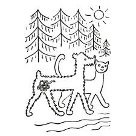

O pyšné noční košilce
Považte, děti, co se pejskovi jednou stalo!
Hopsal, skákal, hrál si s kočičkou na louce, váleli sudy, dělali kotrmelce a všelijaké jiné komedie a přitom si někde vrazil do pacičky ostrý střep. Byl to malý střep, ale hodně to bolelo a nemohl na tu nožičku dobře došlápnout.
“Je to ale nerozum a neopatrnost,” hubovala kočička, “nechat takhle někde válet střepy. To by lidé neměli nikdy dělat! Střepy se mají vždycky pěkně uklidit. Pak na to někdo šlápne, třeba některé zvířátko, nebo třeba i děti, když jsou bosý, a rozříznou si nožičku a pak to bolí a teče jim z toho krev. Pojď, pejsku, můj chudáčku, moje nynyny, ty můj pišulko a pišulánku, můj pišiši a pišišišínku, ty můj broučku zlatý, pojď, ty moje ubohá pišišindo, já tě vezmu domů a zavážu ti tlapičku, aby tě ta bolístka tak nebolela!”
Doma kočička pejskovi tlapičku pofoukala a vymyla a zavázala, aby ho ta bolístka tak nebolela. “Já se bojím, aby se mně z toho neudělal vřes,” povídal pejsek, když mu to kočička zavazovala. “Co aby se ti z toho neudělalo?” divila se kočka. “No, vřes aby se mně z toho neudělal. To se přece někdy z takových bolístek udělá velká bolenice, napuchne to, až je z toho velká boule, kolem je to červené a uvnitř bílé a tomu se říká vřes. A ten pak moc bolí.” – “Aha, ty myslíš vřed!” pochopila kočička. “Ale ne! Vřes myslím. Přece vřed roste u lesa a dává se do vázy!” řekl pejsek. “Ale kdepak!” řekla kočička, “to si to pleteš. Přece vřes se dává do vázy, a ne vřed. Hihihi, kdopak by si dával do vázy vřed! To se přece nedělá, to ne, to ne!” “Ty si to pleteš!” hádal se pejsek. “Z bolístky se někdy udělá vřes a u lesa roste vřed. Tak je to!”
“Tak si tomu tedy říkej jak chceš, ale já se ti musím smát, až to povím dětem, tak se ti budou smát taky,” řekla kočička a položila pejska na polštář. Pejsek seděl na polštáři s tlapičkou zavázanou a čekal, až se mu na ní udělá ten vřes. Čekal dlouho, vrtěl sebou všelijak, ale běhat nemohl, a tak mu byla dlouhá chvíle. “Co mám dělat, co mám dělat!” naříkal, “já mám dlouhou chvíli. Prosím tě, kočičko, povídej mně něco.”
“A co bych ti povídala?” řekla kočička. “Povídej mně nějakou pohádku!” řekl pejsek. “A jakou?” ptala se kočička. “Nějakou hezkou,” žádal pejsek. “Povídej, povídej!” “Chtěl bys o noční košilce?” ptala se kočička. “Tak, o noční košilce, ale musí to s ní nakonec dobře dopadnout,” poručil pejsek.
“Tak tedy o noční košilce,” řekla kočička a začala vypravovat:
“Tak byla jednou jedna noční košilka a ta byla chudá. A protože byla chudá, tak na sobě neměla žádné červené, ani modré, ani žluté, zelené nebo fialové proužečky, ani žádné vyšívání s kuličkami, čtverečky, hvězdičkami, kytičkami, ani lístky. Byla jenom bílá, ale přitom byla moc hodná. A tak šla jednou na procházku a potkala jinou noční košilku.
‚Jéjej, to je krásná košilka!’ vykřikla ta chudá noční košilka. Ona ta druhá noční košilka byla bohatá a byla krásně barevná a měla na sobě vyšívané čtverečky, proužečky a všelijaká kolečka a všecko možné, jak moc byla zdobená. ‚Ach košilo, ty jsi tak krásná, ty se mně tak tuze líbíš, řekla ta chudá noční košilka té bohaté noční košilce, ‚pojď si se mnou hrát!’ Ale ta bohatá noční košilka byla pyšná. ‚Nepůjdu!’ řekla, ‚ty na sobě nemáš žádné proužečky, ani žádná kolečka a nic, s tebou já si nebudu hrát!’ To řekla a šla pyšně dál.”
“To nebyla hodná noční košilka,” řekl pejsek, “když si s tou chudou košilkou nechtěla hrát.“Baže nebyla,” řekla kočička. “Však taky, jak si potom hrála sama, tak na sebe nedala dobře pozor a hrála si v blátě a moc se umazala.” “To měla z toho, že byla pyšná!” řekl pejsek, “a teď zas povídej dál!”
“No tak teda,” povídala kočička dál, “tu chudou noční košilku to trápilo a byla z toho smutná. Šla domů, sedla si na postýlku a byla pořád ještě z toho smutná, jak si ta pyšná noční košilka s ní nechtěla hrát. A tu k ní přišel takový andělíček a povídá jí: ‚Proč jsi tak smutná, košilko?’ ‚Já jsem smutná,’ řekla chudá noční košilka, ‚protože jsem potkala krásnou noční košilku, ta byla vyšívaná a měla na sobě všelijaká kolečka, jahůdky, čtverečky a proužečky a ta se mně tak tuze líbila a já jsem si s ní chtěla hrát, ale ona nechtěla, protože jsem chudá a nemám na sobě žádné takové vyšívání, jako měla ona.’
‚Nic si z toho nedělej,’ řekl andělíček. ‚Jen se pěkně svlékni a jdi hajat. Však ono se to do rána už třebas nějak spraví.’ Tak se tedy ta chudá noční košilka svlékla a šla pěkně hajat.
A když spala, zavolal ten andělíček ještě jiné andělíčky a ti tu košilku krásně vyšili a udělali na ní proužečky a červené tečky a čtverečky a ještě takové všelijaké věci, jak to má kdo rád, a ještě ji pěkně vyžehlili a pak zas odletěli. A když se ráno ta noční košilka probudila a oblékla se, tu se ani nemohla poznat. Šla na procházku a teď potkala tu pyšnou noční košilku, která si s ní včera nechtěla hrát. A ta pyšná noční košilka byla dosti umazaná, to jsme už povídali, a nemohla tu košilku ani poznat. ‚To je krásná noční košilka,’ řekla si, ‚kdyby si tak chtěla se mnou hrát!”
“Ať si s ní ta chudá košilka hraje!” řekl pejsek kočičce. “Ať si s ní hraje a není taky pyšná, když tamta byla pyšná a nechtěla si s ní hrát!” “To také že nebyla pyšná, ta chudá noční košilka,” řekla kočička, “třebaže teď byla čistá a měla na sobě tečky a čtverečky a proužečky. Ona řekla té pyšné: ‚Jen si pojď se mnou, ty košilko, hrát!”
“To je dobře, to se mně líbí,” řekl pejsek, “že se nestala pyšnou. A na co si všechno hrály?”
“No na všecko si hrály,” povídala kočička. “Hrály si s panenkami a na prodávanou, na školu i na honěnou i na schovávanou, dělaly si věnečky a zahrádku, hrály si na vaření a na návštěvu a na všecko možné, až si dost vyhrály, a pak šly spolu do jedné postýlky spát. A ta pyšná noční košilka už nebyla pyšná, ona si řekla, že už nikdy pyšná nebude, a potom si ty dvě noční košilky spolu hrály každý den a nikdy se ani spolu nehádaly, ani žádná z nich nechtěla jedna druhé poroučet.”
“Tak to bylo dobře,” řekl pejsek. “A mne už tlapička nebolí. Já jsem na tu bolístku při tom povídání docela zapomněl.”